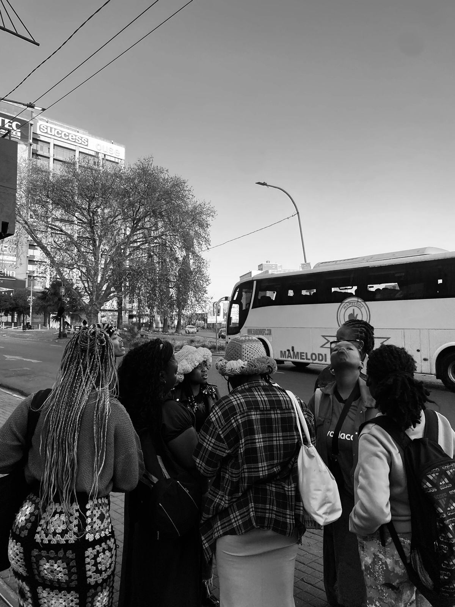

How we started
It began with a meetup
In July 2024, the founder put a call out on social media: anyone who loved to crochet, or wanted to learn, was welcome to come together. A small group answered: strangers from the internet who showed up with hooks, yarn, snacks, and an afternoon to spare.
They played games. They shared skills. Beginners learned their first stitches from people who'd been crocheting for years. What started as one gathering has grown into Earth, Hand and Fibre: an organisation built around the same idea, that a shared skill can build a community, and a community can give back.
Today, Earth, Hand and Fibre is registered with the CIPC as an NPC, and is working towards NPO registration as well.
- Odette Cecilia ChambalaFounder
- Kgothatso Raesibe MphahleleCo-founder
- Siyabulela BekwaCo-founder
